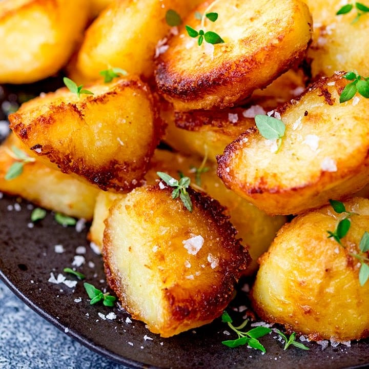

Crispy Roasted Potatoes

Description
Achieving crispy potatoes without a deep fryer is always a challenge, but there are techniques that can help us get there.
Par-boiling cut potatoes in alkaline water (i.e water with baking soda) helps break down the outside of the potato chunk, which
makes it easier for an oven to crisp.
Ingredients
- 3 pounds of russet potatoes
- Baking Soda
- Bacon Fat (or simple cooking oil)
- Dry Spices (Garlic, onion, paprika, cayenne)
- Salt & Pepper
Steps
- Peel russets and cut them into 1-inch chunks. Bring water to a boil first, then add potatoes.
- Add 1tsp of baking soda and 2 Tbsp of salt to the pot and bring back to a boil. Turn down to a simmer and cook potatoes until they are soft.
- Strain potatoes of all water, then place in a mixing bowl. Toss with bacon fat, dry spices, salt, and pepper.
- Spread potatoes evenly on a baking sheet with foil. Bake at 450 degrees until golden brown and crispy.